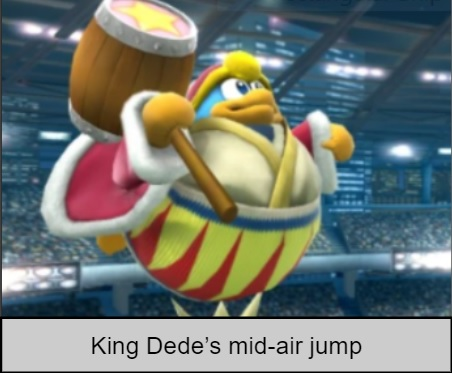
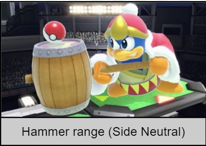
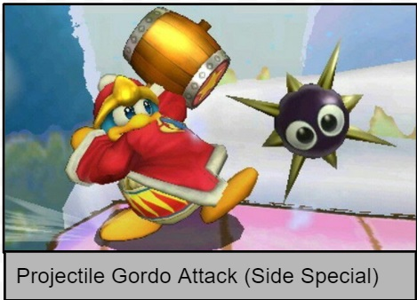
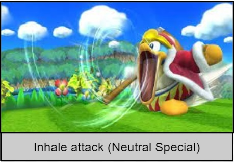
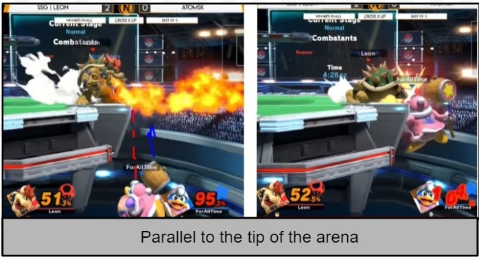
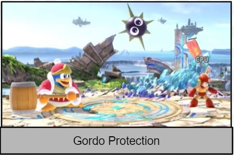
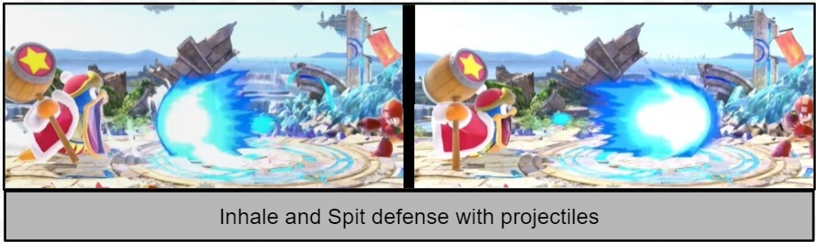
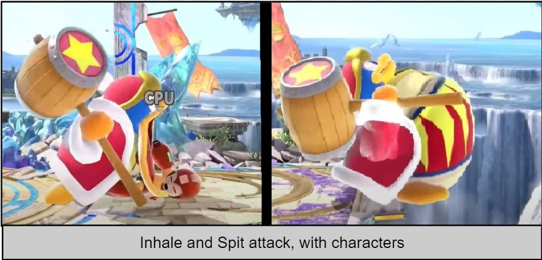
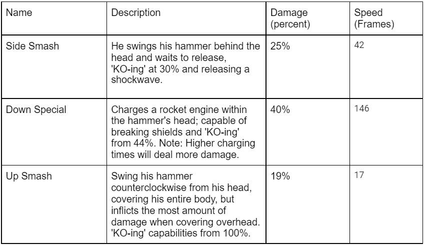

Introduction
Super Smash Brothers is the crossover combat video game featuring your favourite Nintendo characters. In a third-person perspective, players fight to be the last man standing. Players can select their characters, each character has a similar attack layout, and many strategies are transferable from one to another.
In this article, we will discuss one very beginner-friendly character, no other than King Dede! Keep reading in background information to see if his signature traits align with your play style.
Note: Article intended for people with SSB Ultimate experience or earlier game version.
Background Information
What makes Kind Dede such a beginner-friendly character? Dede not only has the benefits of a heavyweight but will possess the recovery of balloon character, allowing for up to 4 jumps mid-air in addition to his already good recovery.

Dede's long-range attack, thanks to his trademark hammer, arm him with the ability to inflict damage on opponents without a sense of threat from them.

Dede fires Gordo's slow pace, forcing his opponents to fall back and securing his map position.

If all the above advantages weren't enough, King Dede could inhale and spit out projectiles or opponents. Rather than shielding from projectiles, inhaling and spitting will give them a taste of their own medicine.

Knowing how to utilize all of these abnormal abilities will grant your jolly penguin supremacy over any situation on any spot on the map.
General Playing Strategies
Recovery:
Utilizing King Dede's four mid-air jumps and his outstanding (up-special) attack, Dede can recover from any position on the map if used correctly. Of course, just like any character, after being hit off the arena, you first want to use your mid jumps and given Dede's (up-special). You want to keep your joystick pointed toward the stadium and only use the recovery once Dede is below the tip of the area. Using this method places you below the arena, avoiding any projectile spam from the edge guarder.

Defensive and Offensive Countermeasures:
Gordo protection (Side-B). Firing these on flat surfaces while quarter turning your joystick upwards will cause the Gordo to travel very slowly. You are giving yourself time to deal with other opponents or to camp safely. Produces the most amount of damage when both the hammer and the Gordo connect onto your opponents.

Inhale protection (neutral-b). While Dede's projectiles might not be the strongest, Dede inhales grants you the ability to inhale any projectile and spit it out as if it were yours. The inhale and spit attacks will also work on characters. If given the opportunity, inhaling opponents with bad recoveries and releasing them at the bottom may gain you .stock on them.


-
Attack Combos. Dede's unusual combination of being heavyweight and great at aerial travel gives him the ability to carry out combos that build off those characteristics.
- Neutral-Air, Down Tilt: Great for opponents with lower percentages; pushes the opponent off the arena, forcing them to recover.
- Neutral Air, Forward air: Pushes your opponents off the map; better for opponents with middle percentages.
- Neutral-Air, Up-Tilt: Leaves your opponents high in the air; better for opponents with low percentages.
- Back-Air, Forward Tilt: Pushing the opponent off the arena, forcing them to recover, leaving 30 percent damage, works best for opponents with lower percentages.
- Down-Throw, Forward-Air, Side-Special: Deals 40 percent damage, leaves your opponent off the edge of the arena, forcing them to recover, works for all percentage levels, the last move changeable.
Many experienced opponents will detect repetitive attacks, so throw in the element of surprise by customizing your combos. Use this table as a reference for adding combo finishers:
